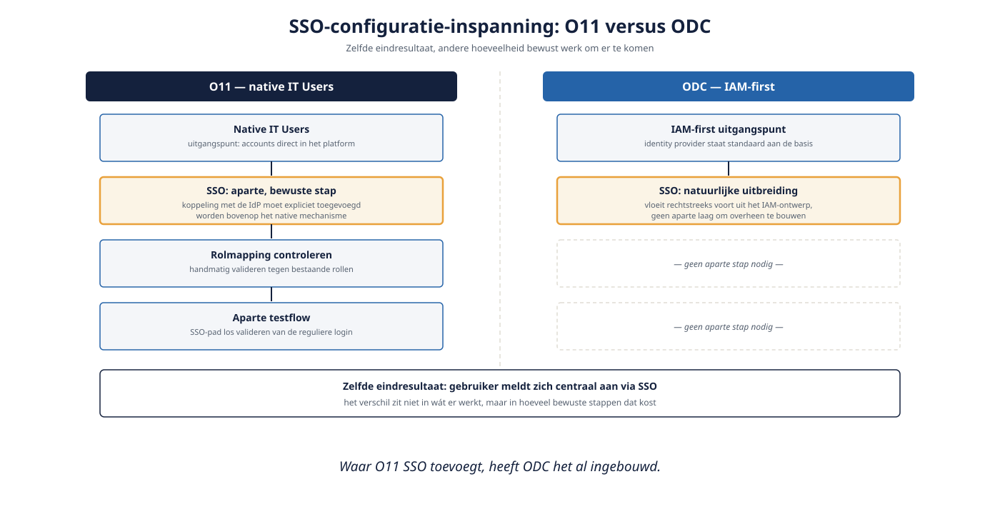

Deel 17 — Beveiliging serieus: OWASP in low-code, SSO, audit, AVG
Slidedeck · Ductus-cursus OutSystems · Niveau 2 — Professional · deel 17 van 30 · 14 slides
Slide 1 — Title: OutSystems: Vakbekwaam
OutSystems: Vakbekwaam
Deel 17 — Beveiliging serieus: OWASP, SSO, audit, AVG
Slide 2 — Bullets: Van basis naar continu proces
Van basis naar continu proces
- Deel 8: rollen, screen-autorisatie, IT Users vs IAM
- Nu: persoonsgegevens op landschapsschaal
- Beveiliging als proces, niet eenmalige configuratie
Slide 3 — Section: OWASP in een low-code context
OWASP in een low-code context
Slide 4 — Table: Platform-opgelost of jouw verantwoordelijkheid?
Platform-opgelost of jouw verantwoordelijkheid?
| Risico | Wie lost het op |
|---|---|
| SQL-injectie via Aggregate | Platform (automatische escaping) |
| Broken access control | Jij (deel 8: scherm + datafilter) |
| Security misconfiguration | Jij (bijv. vergeten rolkoppeling) |
Slide 5 — Opdracht: Opdracht 17.1 — Platform of jij?
Opdracht 17.1 — Platform of jij?
Drie situaties.
→ Werkboek 17.1
Slide 6 — Section: Single Sign-On
Single Sign-On
Slide 7 — Table: SSO: O11 versus ODC
SSO: O11 versus ODC
| O11 | ODC | |
|---|---|---|
| Uitgangspunt | Native IT Users | IAM-first |
| SSO-configuratie | Aparte, bewuste stap | Natuurlijke uitbreiding |

Slide 8 — Opdracht: Baan A / Baan B
Baan A / Baan B
A — SSO + AuditLog in Service Studio
B — Zelfde opbouw in ODC Studio
→ Werkboek, eigen baan
Slide 9 — Section: Audit en AVG
Audit en AVG
Slide 10 — Bullets: AuditLog: wie, wat, wanneer
AuditLog: wie, wat, wanneer
- Gestructureerd patroon in de Core-laag
- Niet losse logregels per module
- Nodig voor DNB/AFM-toezicht
Slide 11 — Bullets: AVG: concrete technische consequenties
AVG: concrete technische consequenties
- Toegang gekoppeld aan legitiem doel
- Bewaartermijnen technisch afdwingbaar
- Inzage/verwijdering uitvoerbaar zonder de hele applicatie te doorspitten
Slide 12 — Opdracht: Reflectieopdracht 17.2
Reflectieopdracht 17.2
Waarom AuditLog in de Core-laag, niet per module?
→ Werkboek 17.2
Slide 13 — Bullets: Kernpunten deel 17
Kernpunten deel 17
- Platform lost een deel van OWASP op, niet alles
- SSO: aparte stap in O11, natuurlijke uitbreiding in ODC
- Audit: gestructureerd, gedeeld, in de Core-laag
- AVG: vertaalt naar concrete keuzes in autorisatie, bewaartermijn, datamodel
Slide 14 — Section: Volgende deel: Asynchrone verwerking
Volgende deel: Asynchrone verwerking